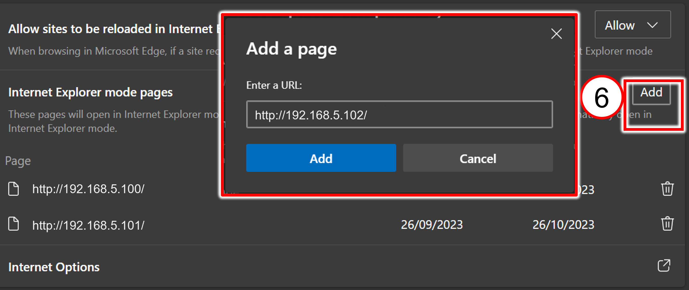
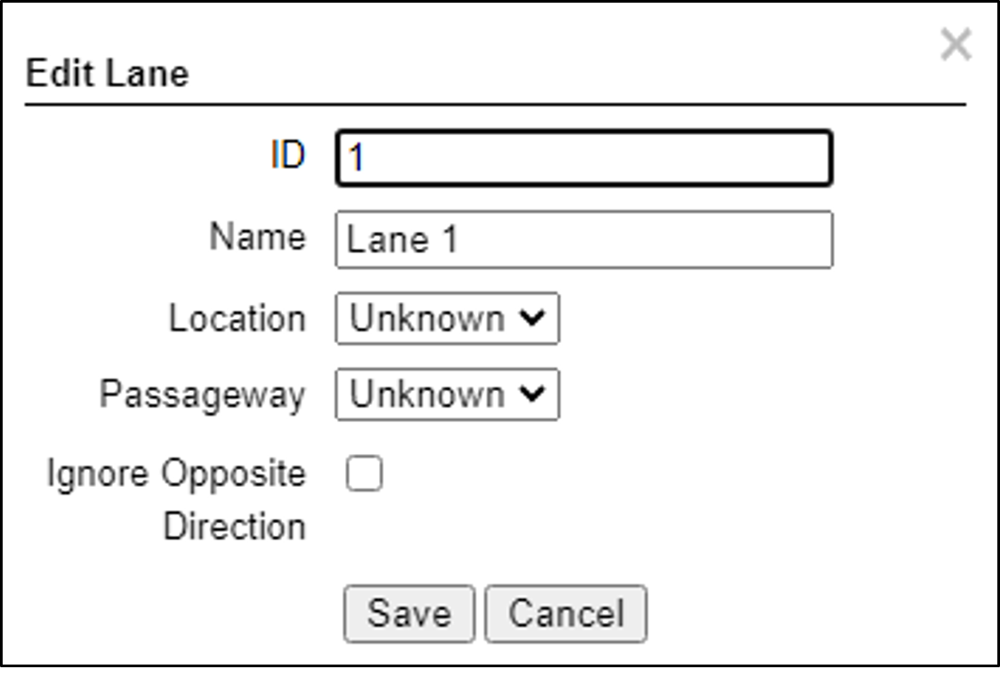
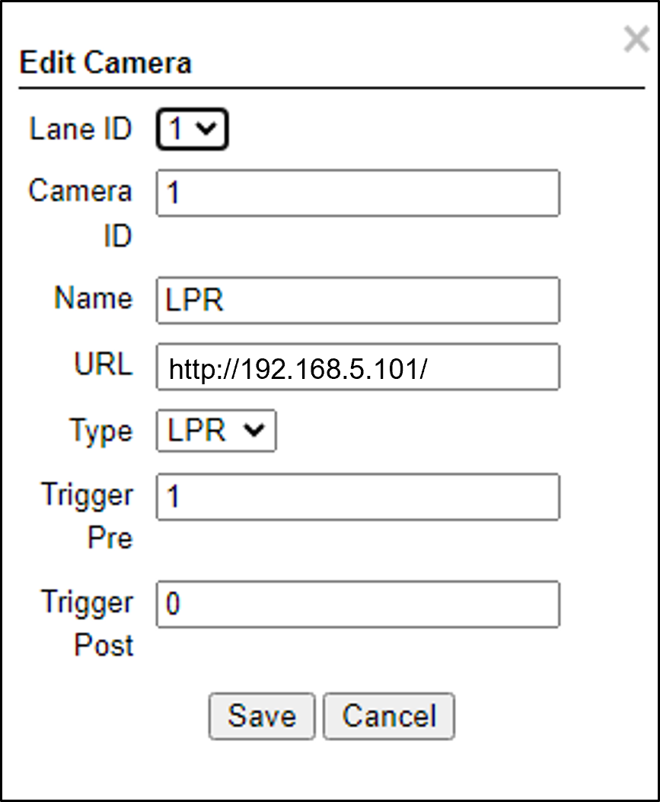

INEX ALPR for the TIBA Parking System
Installation and Calibration Guide
Click to show the Table of Contents
- 1. Background
- 2. Applicable Products
- 3. Computer and Software Requirements
- 4. Solution BOM
- 5. Lane Design
- 6. Camera Wiring
- 7. Use IZ Discovery and Allocate IP Addresses
- 8. Configure Microsoft Edge
- 9. Log In to a Camera
- 10. Configure the LPR Camera (Sensor)
- 11. Configure the OV Camera (Sensor)
- 12. Prepare to Aim and Calibrate
- 13. Log In to RoadView
- 14. Configure RoadView - Settings Tab
- 15. Configure RoadView - System Info Tab
- 16. Calibrating the Cameras Using RoadView
- 17. Verify System Operation
- 18. Troubleshooting
- 19. Legal Notices
1. Background
This document describes how to install, configure and calibrate an INEX ALPR Camera for a single lane, to work with the TIBA Parking System.
2. Applicable Products
\{why do we need this section if we have the BOM?} IZA500GR camera (Rev. F3) with built-in RoadView (RV) video analytics - ver 1.15.54
3. Computer and Software Requirements
-
Computer running with Windows 10 or later
-
Microsoft Edge browser
4. Solution BOM
-
Camera System:
-
IZA500GR-DRW-P48 - for USA, Mexico, Canada
-
IZA500GR-IRW-P48 - for Israel, EU, Taiwan, Australia, Vietnam, GCC, India, Singapore
-
-
Power Supply for P48 models
-
IZPWR75+IZ4POE - for a single camera via POE
-
IZPWR120+IZ4POE - for two cameras via POE
-
IZPWR240+IZ4POE - for four cameras via POE
-
-
Camera Mounting hardware
-
IZMNTA-WE - wall mount
-
\{incorrect; IZMNTA-WE comes with removable pole mount} IZMNTA-WE+MNT-PMA - pole mount
-
IZMNTA-UC - under-ceiling
-
-
IZCLOUD-APM - IZCloud Automatic License Plate Recognition (ALPR) Performance Monitoring
6. Camera Wiring
| Item | Description | Ordering Information |
|---|---|---|
A |
LAN Cables |
Supplied by integrator |
B |
Power Supply for IZ4POE |
For 1 camera, use a 75 W supply (IZPWR75) |
C |
Inductive Loop |
Supplied by integrator |
D |
Gate |
Supplied by integrator |
7. Use IZ Discovery and Allocate IP Addresses
-
Allocate 3 consecutive IP addresses for the onboard processor and the LPR and OV cameras (sensors). For example:
-
Processor - http://192.168.5.100/
-
LPR Camera - http://192.168.5.101/
-
OV Camera - http://192.168.5.102/
-
-
Use IZ Discovery to find the onboard processor and LPR/OV cameras, and to change their IP addresses to the ones you allocated.
7.1. Installing and Using IZ Discovery
The IZ Discovery utility discovers all active devices connected to the network, and displays a list of their network parameters. These devices can include cameras and computers.
|
If any device on your network is connected via wireless, IZ Discovery will not recognize the device. In addition, if the computer running IZ Discovery is connected via wireless, you will not see any devices displayed. |
-
Download the IZ Discovery software (link)
-
Run IZ Discovery
-
When IZ Discovery first runs, you may see a Windows security warning. If so, click Run.
-
If you see a message related to the Windows firewall, click Allow.
-
IZ Discovery will start and display a list of devices on the network, according to their serial numbers (see Figure 4).
-
Scroll down to find the device you are interested in. You can double-click to view/edit a specific device’s IP address parameters (see Section 7.2).
-
Click Clear List to refresh the discovery process.
 Figure 4. IZ Discovery Utility
Figure 4. IZ Discovery Utility
-
-
If IZ Discovery does not recognize a device:
-
Press the device’s reset button (if available)
-
Reset the device by shutting off power/removing the LAN cable, waiting 5 seconds, and reapplying power
-
Check the LAN cable connected between your laptop and the network, and the LAN cable connected between the device and the LAN switch. Replace the cable(s) and try to run IZ Discovery again.
-
7.2. Changing a Device’s IP Address and Network Settings

|
The device’s IP Address cannot be set to 10.10.2.xx or 10.10.3.xx It is highly recommended to use a fixed IP address (not DHCP). A fixed IP address enables you to access the computer using the same URL every time, even after unexpected power outages. A dynamic IP address may change upon device reboot. Before opening the web interface, you will have to find the current IP address of the device using IZ Discovery. If you want to copy the IP address (for login to the device) you will need to uncheck the DHCP checkbox momentarily to make the address field accessible. For devices using RoadView software, you can change the IP address using the RoadView Settings tab. If your device is an INEX Camera System, be sure to define IP addresses for each camera (LPR and Overview), using each camera’s configuration application. It is recommended to use sequential IP addresses for the Camera System and its cameras; for example: 192.168.5.64, 65, 66 |
To change the device’s mode (fixed or dynamic [DHCP]), or IP address:
-
Select the relevant line in the list of devices and double-click on it.
-
The Network Settings window appears
-
To change the mode:
-
Check or uncheck the DHCP box
-
Click Save
-
-
To change the IP address:
-
Verify that the address is not used by any other device on the network
-
Be sure to uncheck the DHCP box
-
Enter the network address parameters
-
Write down the new IP Address and click Save
-
-
The change should be reflected in the main dialog. This can take about a minute until the IP is obtained. If you do not see the change after this time, close IZ Discovery, and then reopen it.
-
Verify that the IP address parameters have been changed to the ones you wanted. If not, you will have to log into the device (or RoadView) and change the IP address.
8. Configure Microsoft Edge

-
Open Edge and click the 3-dot menu at upper right
-
Select Settings
-
Menu at left - "Default Browser"
-
Allow sites to be reloaded in Internet Explorer mode (IE); change from "Default" to "Allow"
-
Click the Restart button; wait for restart
 -
Internet Explorer Compatibility
-
Internet Explorer mode pages; click the Add button
-
Add URLs
URLs expire after 30 days and must be re-entered.
-
9. Log In to a Camera
-
To view the camera’s home page (see Figure 7):
-
Open MS Edge in Internet Explorer mode. Enter the IP address of the camera into the address field of the browser.
 Figure 7. Camera’s Home Page
Figure 7. Camera’s Home Page
-
-
Select the function you need from the links at the upper right:
-
Click the Live View link to see what the camera is currently viewing. You can also use controls such as zoom and focus (see [s_Calibrating-the-Cameras-Using-RoadView]).
Click to show notes for Live View
When using Live View for the first time, you may be prompted to download and install an ActiveX control (Smart Viewer).
If you do not have an internet connection to the network on which the camera is installed, wait 30 seconds, and you will be instructed on how to install the ActiveX control locally via the camera’s firmware.The stream of the Live View can also be accessed using an RTSP URL with the following format :
rtsp://[username:password]@<Camera IP address>/cam0_0
where cam0_0 is a camera-specific parameter (which in this case enables you to access the primary stream)To see the stream, use a video player such as the VLC player, located at:
VLC -
If you need to change the IP address of the camera or other configuration parameters, click the Admin link.
-
-
When prompted for a login, use the Administrator username/password credentials of root, IZpass12.
The Administrator user name (root) cannot be changed, and the Administrator password is encrypted. Therefore, if someone changes the Administrator password, there is no way to find out the password if it gets lost.
10. Configure the LPR Camera (Sensor)
|
After changing settings, remember to click the Apply button at the bottom of each parameter section. |
Change the parameters to match the following screen captures:
10.1. LPR Camera - Video & Device > Video Streams
10.2. LPR Camera - Video & Device > Video Streams > Camera Settings
|
Before changing the Camera Settings parameters, be sure to click the Default(Day) link at the top of the Camera Settings table. \{need to tell user any other tips about AGC or Shutter times?} |
11. Configure the OV Camera (Sensor)
|
After changing settings, remember to click the Apply button at the bottom of each parameter section. |
Change the parameters to match the following screen captures:
11.1. OV Camera - Video & Device > Video Streams
11.2. OV Camera - Video & Device > Video Streams > Camera Settings
|
Before changing the Camera Settings parameters, be sure to click the Default(Day) link at the top of the Camera Settings table. \{need to tell user any other tips about AGC or Shutter times?} |
12. Prepare to Aim and Calibrate
There are two cameras (sensors) in the Camera System. Both are calibrated in nearly the same way. The LPR camera is set to capture in black and white, and the Overview (OV) camera is set to capture in color.
The OV camera can be used both to display an overview image, and to perform LPR recognition. You may even be able to improve read accuracy by changing the zoom to have one camera "see" closer than the other one.
Move a vehicle next to, and at the middle of the capture line. (This is the position at which the vehicle detector signals that the vehicle is present.) Ensure that the Camera System is aimed at the middle of the lane, and is at the required capture distance.
Alternatively, in a lab, position a license plate at the expected distance and height.
13. Log In to RoadView
13.1. Logging In
-
Open a Microsoft Edge browser in Internet Explorer mode.
-
Type in the IP address of the RoadView computer. For example:
http://192.168.5.100/ -
You will see the login screen. Enter the default username and password (root, root):
 Figure 16. Logging In to RoadView
Figure 16. Logging In to RoadView -
You should see the RoadView Live (Journal) tab.

14. Configure RoadView - Settings Tab
Use the Settings tab after the first installation or re-installation of the ALPR system, or when some fundamental parameters need updating. For example, if the Camera System was moved to a different location (time zone).
|
Configure the parameters in the order in this section of the document. After clicking the Save button at the end of the Detector Configuration section, it will take several seconds before the Live tab can start displaying Events. Also, some defaults and/or available parameters may change, depending on the Detector Configuration "Mode" selected. |
14.1. Software Version and Camera Information
The box at the upper right of the Settings screen shows:
-
The IZA500GR software version (verify this is the correct version)
-
The model, part number and serial number of the camera(s) IZA500GR is communicating with:
14.2. Network Settings
-
If needed, set the IZA500GR computer’s IP address parameters.
-
Remember to click the Save button in this section; the change will be applied immediately.
|
The Network Settings refer to the RoadView computer (Camera System) - NOT the computer on which the browser displaying the GUI is running. It is highly recommended to use a fixed IP address (not DHCP). A fixed IP address enables you to access the computer using the same URL every time, even after unexpected power outages. |
14.3. Date and Time Settings
|
The Date and Time Settings refer to the location of the RoadView computer (Camera System) - NOT the computer on which the browser displaying the GUI is running. The Time Zone selections are organized by continent. For example, the "America/" prefix covers various cities and countries in North America (U.S. and Canada) and South America. |
-
Select "Set Time Manually"
-
Click in the Date and Time box to display a calendar/time popup. You should also select a Time Zone; set it to the local time at the location in which the Camera System is installed (not the UTC default).
-
Remember to click the Save button at the end of this section after making changes.
14.4. Lanes
Use this section to add and configure Lanes.
-
Actions:
-
Edit - edit the Lane’s parameters
-
Delete - delete the Lane (a warning will be displayed)
-
Trigger - send a software trigger immediately to RoadView
Each Lane number must be unique in the overall ALPR system.
The images from all cameras capturing the same physical lane will be combined into a single Event.
Each "Lane" is actually a virtual Lane. For example, if you have two Camera Systems capturing the same physical lane, you will need to create two different "Lanes", and associate each Camera System’s cameras with a different "Lane".
Figure 22. Add/Edit Lane Dialog
-
-
ID (required) - The identification number of the lane to be captured by the cameras. This number will appear associated with Events in the Live tab.
-
Name (required) - The name of the Lane as it will appear throughout the user interface (GUI).
-
Location - Select one of the following options:
-
Unknown - the camera’s position relative to vehicles is unknown.
-
Front - the camera in this Lane is capturing images from the front of vehicles
-
Rear - the camera in this Lane is capturing images from the rear of vehicles
-
-
Passageway - Unused
-
Ignore Opposite Direction - Unused
14.5. Cameras
-
Actions:
-
Edit - edit the camera’s parameters (see Figure 24)
-
Delete - delete the camera (a warning will be displayed)
-
-
Camera table headers: Camera ID, Lane ID, Name, URL, Type (as configured when the camera was added)
-
Image - Thumbnail image from a recent camera image
If you add a camera, or edit a camera’s parameters and click the Save button in this dialog (even if you did not change the URL), you may see a warning icon in the Image column. The reappearance of the image indicates that the core software has restarted, and Events will resume being captured and displayed in the Live tab, with the following changes:
- The Transaction ID will restart at 1 for that camera.
- The history of previous Events for that camera will be cleared -
Add Camera (button at end of Cameras section):
Figure 24. Add/Edit Camera Dialog-
Lane ID - The identification number of the lane being captured by the camera(s). Select a Lane number you defined (see Section 14.4). This number will appear associated with Events in the Live tab.
The images from all cameras capturing the same physical lane will be combined into a single Event.
Using the same Lane ID for different cameras (even the LPR and OV cameras within the same Camera System) will combine the reads into one Event (see Section 14.4). You may even be able to improve read accuracy by changing the zoom to have one camera "see" closer than the other one.
You could also position cameras to be in different positions (front/rear).
-
Camera ID - For internal use; should be unique in the overall ALPR system
-
Name - Camera name for internal use; should be unique in the overall ALPR system
-
URL - RTSP or HTTP URL:
-
RTSP stream URL example:
rtsp:// <camera IP address>/cam0_0 -
HTTP URL example:
http:// <camera IP address>
-
-
Type - Type of camera (LPR or View)
-
Trigger Pre - Set as shown
-
Trigger Post - Set as shown
-
14.6. IZCloud Integration
Enable IZCloud Integration and set the parameters as follows:
-
Remember to click the Save button at the end of the Detector Configuration section after making changes.
14.7. TIBA Integration
Enable TIBA Integration and set the parameters as follows. Remember to click the Save button at the end of the Detector Configuration section after making changes.
-
TIBA URL - the URL of the TIBA server
-
User Name - username to access the TIBA server
-
Password - password to access the TIBA server
-
Token - token for access to the TIBA server
-
Camera Port - the HTTPS port on which RoadView listens for capture and “open gate” commands
-
Auth Key - the key that should be in one of the headers sent by the TIBA server, in the HTTP requests for capture and “open gate” commands
-
Auth Value - the value for the header with the key defined by Auth Key, that should match the value sent by the TIBA server, in the HTTP requests for capture and “open gate” commands
-
Lane ID - this table is automatically populated with the number of lanes defined in the Lanes section at the bottom of the Settings tab
-
GPIO - the nn number that identifies the GPIOnn pin on the NVIDIA Jetson processor’s I/O module. A signal is sent to this pin when an "open gate" command is received from the TIBA server. See the NVIDIA Jetson documentation for further information. (See next Note)
In addition to the GPIO signal, a signal is also sent to the camera; this signal can be used to open a gate via a relay.
14.8. Direct Trigger
Set the Direct Trigger as shown here:
-
Remember to click the Save button at the end of the Detector Configuration section after making changes.
15. Configure RoadView - System Info Tab
Set the parameters as shown here:
-
Remember to click the Save button at the end of this section after making changes.
16. Calibrating the Cameras Using RoadView
-
When you see a vehicle at a typical capture position on the video, click on the video to pause it.
-
It is recommended to use the view called "Draw image by maintaining aspect ratio (two-headed arrow)". You select this view by clicking on the right-most button at the upper left of the screen:

-
Select a camera from the dropdown list (LPR or OV).
-
The Frame Width (horizontal) and Frame Height (vertical) are displayed at the lower left, and are set automatically.
-
The Frame Timestamp at the lower left displays the date and time that the image is being taken/was taken by the camera.
-
Aim the camera using the mounting bracket’s adjustment hardware (see Figure 32).
-
Pan: Adjust the Pan so that the image of the license plate is in the horizontal middle of the Field of View.
-
Tilt: Adjust the Tilt so that the image of every expected plate position (depending on the vehicle type, such as passenger cars, jeeps, trucks, etc.) will be in the middle of the screen (from top to bottom).
-
Roll: Adjust the Roll so the license plate’s image is horizontally straight, parallel to the ground (not tilted to one side).
 Figure 32. Pan/Tilt/Roll (Angle) Adjustments
Figure 32. Pan/Tilt/Roll (Angle) Adjustments
-
-
When the correct position is achieved, make a preliminary tightening of the mounting screws.
-
Define the Region of Interest (ROI) by dragging on the corners (vertices) of the trapezoidal region. For optimum recognition accuracy, the ROI should be large enough to capture the region where plates could be found in images.
The following settings for the LPR and OV cameras are saved separately. For example, you may want a Region of Interest that is different for each camera.
-
Define the Plate Width Min: Events will only be created for plate reads whose width is greater than or equal to this parameter. Enter the desired value in the Plate Width Min text box.
This parameter can also be configured by dragging the small circle on the horizontal line on the Calibration tab (expressed in pixels).
This parameter can be used to ignore small plate reads. For example, if the image was taken when a vehicle is too far away, the characters are too small to be read - even by a human. -
Define the Plate Width Max: Events will only be created for plate reads whose width is less than or equal to this parameter. Enter the desired value in the Plate Width Max text box.
This parameter can also be configured by dragging the large circle on the horizontal line on the Calibration tab (expressed in pixels).
This parameter can be used to prevent false reads, such as large numbers on trucks. -
Use the zoom and focus buttons to adjust the view of the video until the width of the plate is \{still true?} 150 pixels, and its plate image is clear and sharp. (The surrounding items, such as the vehicle body, do not need to be as sharp as the plate.)
There is a delay between a click of a zoom/focus button and when you see the effect on the screen. Be sure to wait until you see the change on the screen before clicking the button again. Clicking the button multiple times will cause you to "overshoot" the desired zoom/focus.
As you adjust the zoom and focus, you may need to reposition the camera in order to get the image of the plate back to the desired position.
-
Direction (red arrow on video): Not used
-
When you have finished, click the Save button. Wait several seconds for the display to refresh automatically, which indicates that the RoadView recognition software is running again with the updated parameters.
-
When the correct position is achieved, make a final tightening of the mounting hardware.
-
Repeat these steps for the other camera.
17. Verify System Operation
-
Using a license plate mounted in a lab, or by driving a vehicle through the lane, verify that an Event is generated with the correct plate read, as recorded in the RoadView Live (Journal) tab.
-
Once the lane is active, verify that Events are being generated for each vehicle passing each camera, and that the recognition has sufficient accuracy and confidence.
-
You can use the Search tab to find Event records stored in the RoadView database.
18. Troubleshooting
| Symptom | Possible Solution |
|---|---|
Thumbnails in Settings tab, in the Camera section at bottom have been replaced by red exclamation points and/or |
|
Recognition rates are low |
Examine the video from the Camera on the Calibration tab:
|
19. Legal Notices
19.1. Notice
INEX Technologies reserves the right to improve and enhance its product offerings. Thus, the illustrations and descriptions presented in this manual may differ in some respect from the products you receive.
Technical specifications are subject to change without notice.
In addition, please note that some figures are not drawn to scale, in order to illustrate the addressed issue more effectively.
All third-party trademarks are the property of their respective owners.
INEX Technologies cannot be held liable for technical and editorial omissions or errors made in this document; nor for incidental or consequential damages resulting from the furnishing, performance or use of this document.
Actions or circumstances that void the warranty are improper usage, improper handling without adequate electrostatic discharge (ESD) protection, defects resulting from natural disaster (fire, flood etc.) and unauthorized modifications or repair.
Power undervoltage, overvoltage and/or incorrect polarity will damage the unit and will void the warranty.
It is your responsibility to ensure that all wires connected to INEX Technologies' products have appropriate surge protection. Any damage due to electrical spikes (for example, lightning) is not covered by the warranty.
No part of this document may be reproduced in any form without permission from INEX Technologies.
19.2. Software Precautions
-
The use of any INEX Technologies' software products or any other software product referred to in this document with internet access shall be used wholly at your own risk. INEX Technologies does not take any responsibility for abnormal operation, privacy leakage or any other damages resulting from cyber attack, hacker attack, virus infection or any other internet security risks.
-
Proper configuration of all passwords and other security settings is the responsibility of the installer and/or end-user.
19.3. Legal Disclaimer
TO THE MAXIMUM EXTENT PERMITTED BY APPLICABLE LAW, THE PRODUCT DESCRIBED, WITH ITS HARDWARE, SOFTWARE AND FIRMWARE, IS PROVIDED "AS IS", WITH ALL FAULTS AND ERRORS, AND OUR COMPANY MAKES NO WARRANTIES, EXPRESS OR IMPLIED, INCLUDING WITHOUT LIMITATION, MERCHANTABILITY, SATISFACTORY QUALITY, FITNESS FOR A PARTICULAR PURPOSE, AND NON-INFRINGEMENT OF THIRD PARTY. IN NO EVENT WILL OUR COMPANY, ITS DIRECTORS, OFFICERS, EMPLOYEES, OR AGENTS BE LIABLE TO YOU FOR ANY SPECIAL, CONSEQUENTIAL, INCIDENTAL, OR INDIRECT DAMAGES, INCLUDING, AMONG OTHERS, DAMAGES FOR LOSS OF BUSINESS PROFITS, BUSINESS INTERRUPTION, OR LOSS OF DATA OR DOCUMENTATION, IN CONNECTION WITH THE USE OF THIS PRODUCT, EVEN IF OUR COMPANY HAS BEEN ADVISED OF THE POSSIBILITY OF SUCH DAMAGES.
THE USE OF ANY INEX Technologies' SOFTWARE PRODUCTS OR ANY OTHER SOFTWARE PRODUCTS REFERRED TO IN THIS DOCUMENT WITH INTERNET ACCESS SHALL BE USED WHOLLY AT YOUR OWN RISK. INEX Technologies DOES NOT TAKE ANY RESPONSIBILITY FOR ABNORMAL OPERATION, PRIVACY LEAKAGE OR ANY OTHER DAMAGES RESULTING FROM CYBER ATTACK, HACKER ATTACK, VIRUS INFECTION OR ANY OTHER INTERNET SECURITY RISKS.
For details, see the INEX Software End User License Agreement.
© INEX Technologies - All rights reserved.
Doc. No. TIBA-MAN-002b